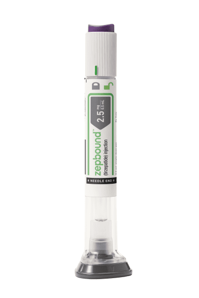

Introduction
If you're more worried about being at a healthy weight, these supplements are for you.
The Pills:
Below are the pills that are recommended/works best for people with a BMI of 30.0-34.9
1. Plenity
Plenity isn’t technically a medication. It’s a medical device that contains cellulose and citric acid. But it comes as a prescription-only pill, and the FDA cleared it to be used as a weight-loss aid. Certain adults who are considered overweight or obese are eligible to take it.
Plenity is not recommended for use during pregnancy. Consult your doctor before breastfeeding.
This oral capsule is designed to help you eat less throughout the day. After you take it, it expands inside your stomach and small intestine to promote feelings of fullness. It doesn’t enter your bloodstream, either; rather, it starts to break down after it reaches your large intestine. In initial studies, about 60% of people taking Plenity lost at least 5% of their body weight after 6 months of use.
One downside to Plenity is the number of pills you’ll need to take per day. The typical dosage is 3 pills, twice daily. What’s more, because of how it works, it’s important to take each dose of Plenity with a full glass of water.
2. Zepbound®

Zepbound® is indicated as an adjunct to a reduced-calorie diet and increased physical activity for chronic weight management in adults with an initial body mass index (BMI) of:
30 kg/m2 or greater (obesity) or
27 kg/m2 or greater (overweight) in the presence of at least one weight-related comorbid condition (e.g., hypertension, dyslipidemia, type 2 diabetes mellitus, obstructive sleep apnea, or cardiovascular disease).
This pill brand advises pregnant patients that weight loss is not recommended during pregnancy and to discontinue Zepbound when a pregnancy is recognized. Available data with tirzepatide in pregnant patients are insufficient to evaluate for a drug-related risk of major birth defects, miscarriage, or other adverse maternal or fetal outcomes. Based on animal reproduction studies, there may be risks to the fetus from exposure to tirzepatide during pregnancy. There will be a pregnancy exposure registry that monitors pregnancy outcomes in women exposed to Zepbound (tirzepatide) during pregnancy. Pregnant patients exposed to Zepbound and healthcare providers are encouraged to contact Eli Lilly and Company at 1-800-LillyRx (1-800-545-5979). Also, The safety and effectiveness of Zepbound have not been established in pediatric patients less than 18 years of age.
3. Wegovy®
Wegovy works by mimicking the hormone GLP-1, which slows digestion and helps your brain regulate appetite by reducing hunger sensations. As your digestion slows, you may feel full longer and therefore eat less, which can lead to weight loss.
Wegovy is a brand-name version of the generic medication semaglutide, which is a type of medication called a glucagon-like peptide 1 receptor agonist. Instead of that tongue-twister of a name, we call these medications “GLP-1s” for short.
Wegovy is FDA-approved and clinically proven to help with weight loss. How? It acts like a natural hormone your body uses to regulate blood sugar and appetite—key steps in resetting your biological set point to help you maintain a new, lower weight. In fact, the STEP 4 clinical trial saw people who combined Wegovy with lifestyle changes lose an average of 10.6% of their body weight after 20 weeks, and 17% after 68 weeks.
4. Ozempic®
A weekly shot to lose weight
Helps you feel full faster, longer
Improves the way your body responds to sugars
Ozempic is not FDA-approved for weight loss, but may be prescribed off-label if a provider deems it appropriate
Ozempic is a brand-name version of the generic medication semaglutide, which is a type of medication called a glucagon-like peptide 1 receptor agonist. Instead of that tongue-twister of a name, we call these medications “GLP-1s” for short. Ozempic is FDA-approved for the management of certain symptoms and risks of type 2 diabetes.
How does Ozempic work?:
Ozempic works by slowing the digestion process, which can help you to feel full for longer. Ozempic, like other GLP-1 receptor agonists, acts like a hormone your body naturally makes to regulate blood sugar and may help support weight loss.
Outro
If you're more worried about getting pregnant, these 2 Oral Contreceptive pills are recommended for people with a BMI between 30.0-34.9.
1. Xulane
Xulane is a birth control patch you wear on your skin to stop you getting pregnant. Xulane contains two hormones - an estrogen and progestin - which are absorbed through the skin. It prevents pregnancy by stopping your ovaries from ovulating and releasing eggs.
Xulane is a generic version of a patch called Ortho Evra, which has been discontinued.
Xulane is a birth control patch for women with a BMI less than 30 kg/m2. It is used to prevent pregnancy.
Your chances of getting pregnant while using Xulane depend on how well you follow the directions for using it. The better you follow the directions, the less chance you have of getting pregnant.
In clinical studies, 1 to 2 out of 100 women got pregnant during the first year that they used the norelgestromin and ethinyl estradiol transdermal system.
Xulane may not be as effective in women weighing more than 198 lbs. (90 kg). If you weigh more than 198 lbs. (90 kg), talk to your healthcare provider about which method of birth control is right for you.
Xulane and other birth control patches are as effective at preventing pregnancy as birth control pills and vaginal rings with hormones. Birth control patches are more effective then condoms and diaphragms.
2. Lo Loestrin FE
Your chance of getting pregnant depends on how well you follow the directions for taking your birth control pills. The better you follow the directions, the less chance you have of getting pregnant.
Based on the results of one clinical study, about 2 to 4 out of 100 women may get pregnant during the first year they use Lo Loestrin Fe.
Women with a BMI above 35 kg/m2 were not studied in the clinical trial, so it is not known how well this medication protects against pregnancy in such women. If you are overweight, discuss with your healthcare provider whether Lo Loestrin Fe is the best choice for you.
Lo Loestrin Fe is a low-dose combination birth control pill (oral contraceptive) containing two different female hormones. It helps to prevent pregnancy.
Lo Loestrin Fe contains an estrogen called ethinyl estradiol and a progestin called norethindrone acetate. Lo Loestrin Fe works primarily by suppressing ovulation, which is when an egg is release from one of your ovaries each month. Combined birth control pills, such as this one, also work by thickening the mucus at the neck of the uterus (womb). This makes it harder for sperm to get through and reach an egg. They also thin the lining of the uterus, which reduces the chances of a fertilized egg implanting and growing.